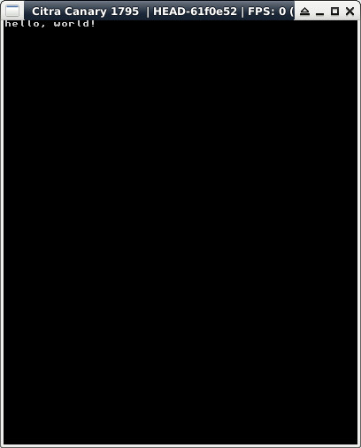

參考資訊：
https://hub.docker.com/r/greatwizard/devkitarm-3ds
main.c
#include <stdio.h>
#include <stdlib.h>
#include <string.h>
#include <3ds.h>
int main(void)
{
gfxInitDefault();
consoleInit(GFX_TOP, NULL);
printf("hello, world!");
gspWaitForVBlank();
gfxSwapBuffers();
svcSleepThread(3000000000LL);
gfxExit();
return 0;
}
Makefile
include $(DEVKITARM)/3ds_rules all: arm-none-eabi-gcc -mword-relocations -ffunction-sections -march=armv6k -mtune=mpcore -mfloat-abi=hard -mtp=soft -I/opt/devkitpro/libctru/include -I/opt/devkitpro/portlibs/3ds/include/ -I/opt/devkitpro/portlibs/3ds/include/opus/ -I/opt/devkitpro/portlibs/3ds/include/SDL -D__3DS__ -c main.c -o main.o arm-none-eabi-gcc -specs=3dsx.specs -march=armv6k -mtune=mpcore -mfloat-abi=hard -mtp=soft main.o -L/opt/devkitpro/portlibs/3ds/lib -lopusfile -logg -lopus -L/opt/devkitpro/libctru/lib -lSDL_image -lSDL_mixer -lSDL_ttf -lSDL_gfx -lSDL -lfreetype -lbz2 -lpng -ljpeg -lz -lcitro2d -lcitro3d -lctru -lm -lstdc++ -o main.elf smdhtool --create "main" "devkitARM" "steward" /opt/devkitpro/libctru/default_icon.png main.smdh 3dsxtool main.elf main.3dsx --smdh=main.smdh clean: rm -rf main.o main.elf main.3dsx main.smdh
編譯、執行
$ sudo docker run --rm -it -v $(pwd):/source nds-env /bin/bash root@c18881035cba:/source# make && exit $ citra main.3dsx
完成
